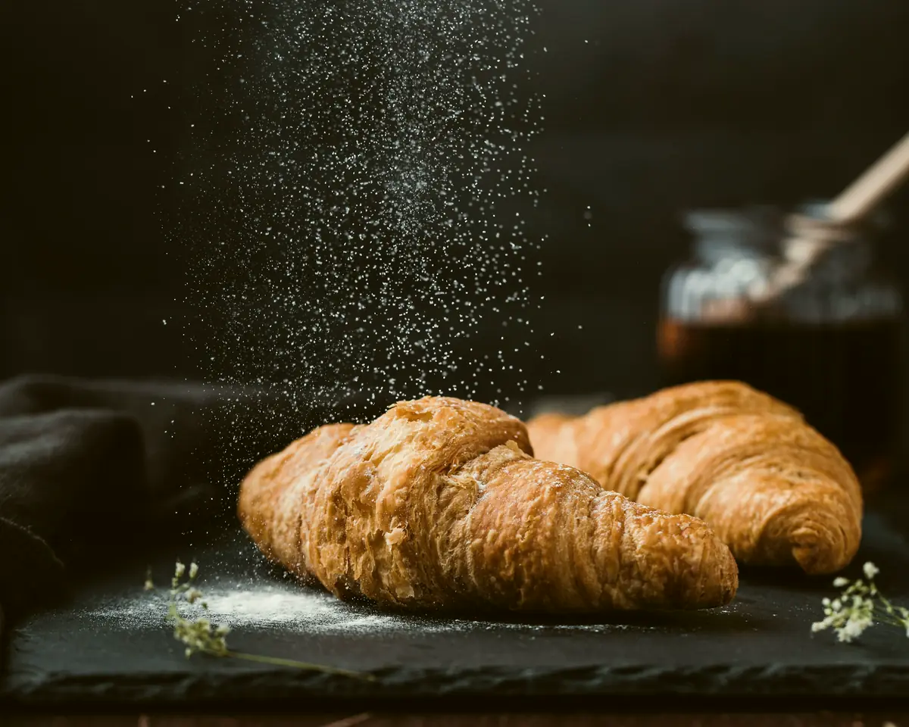

Paleta
Tipografia: Libre Caslon Display + Figtree
Grão sombreado, torrado em lotes pequenos toda segunda. O coado sai na hora, na V60, com água a 92 °C.
Caslon Display muito grande e claro sobre o escuro (o contraste de fino e grosso brilha como a casca na luz); Figtree para texto e interface. O relógio da vitrine vira o maior elemento tipográfico da primeira tela.
Botões e interface
Sólido brasa com texto café-preto (contraste 6,5:1), raio 2 px; secundário com borda de 1 px papel; no "dia", os mesmos botões em café sobre papel. Acima: o menu depois de rolar.
Tratamento de foto



Clave baixa: fundo quase preto, uma luz lateral quente batendo na casca, farinha caindo, vapor do café contra o escuro. Vídeo HyperFrames de tela cheia no hero com o mesmo tratamento.
Motion (2 exemplos)
- Hero: o vídeo abre do preto em 1,6 s com um empurrão lento de câmera; o relógio rola os dígitos (03:40 → 04:30 → 06:00) em máscara, e a linha do tempo leva a brasa até as 6h.
- Amanhecer no scroll: durante o pino horizontal das 36 h, o fundo vai do café-preto ao papel (scrub), e a última etapa, "Na sua mesa", já entra com luz de dia. É uma única transição de tema, com motivo narrativo.
Os 3 problemas da v1
- Menu: transparente só sobre o topo do hero, onde um degradê azul-noite garante contraste; a partir de 40 px de rolagem vira café-preto 88% com desfoque e fio inferior. O conteúdo do hero fica abaixo da faixa de 72 px.
- Vãos: seções escuras de tela cheia (foto ou vídeo de ponta a ponta) e seções de papel em grade; nenhuma célula vazia: o bento vira 3 linhas de foto + texto.
- Hierarquia: na madrugada, a luz é a hierarquia (só o produto e o título iluminados); depois do amanhecer, um título dominante por seção e o resto em corpo 17 px.
O que muda em relação à v1
Mantém tudo do esqueleto (vitrine e relógio crescem e viram o centro do hero, pino das 36 h, quadro, contadores, abas, copy, SEO). Muda: o hero passa a ser vídeo de tela cheia (versões 16:9 e 9:16 do HyperFrames); a faixa de ingredientes vira texto Caslon claro sobre café-preto; o quadro de fornadas fica no escuro, como um painel de estação iluminado.